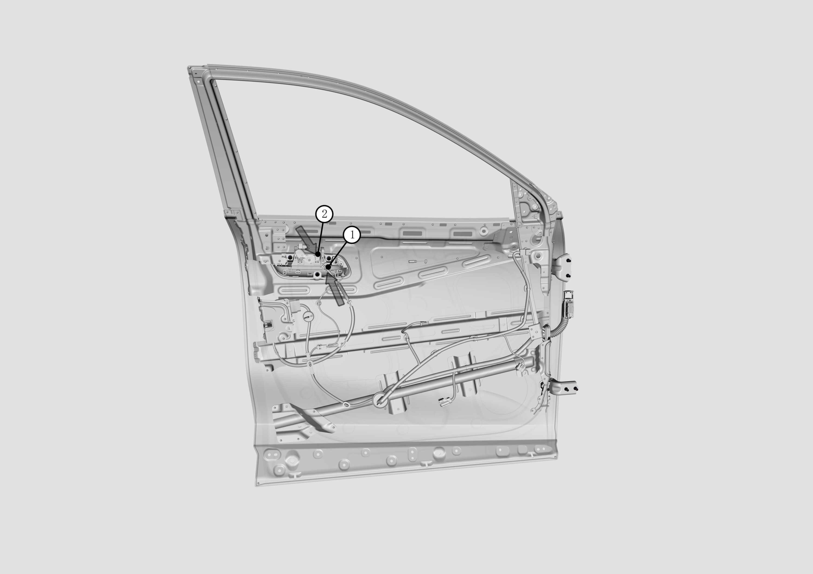
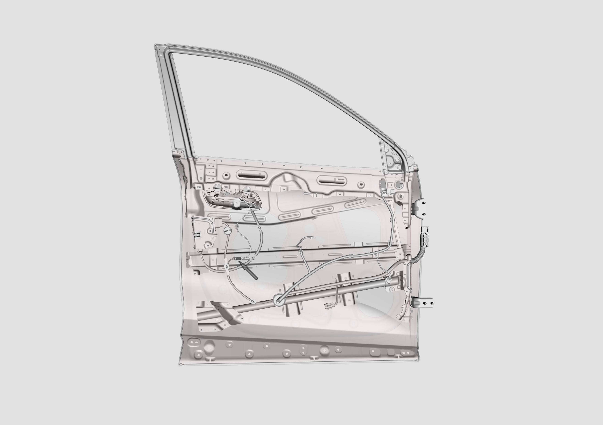

Снятие и установка наружной ручки передней двери
Снятие
Внимание
Здесь описаны Снятие и Установка наружной ручки двери со стороны водителя, снятие и установка наружных ручек трех других дверей выполняются аналогично.
1. Поднять стекло передней двери до упора.
2. Снять облицовочную панель передней двери, см. Снятие и установка облицовочной панели передней двери
3. Снять наружный трос отпирания
Снять наружный трос отпирания замка двери с ручки в последовательности 1, 2 в местах, указанных "стрелками".

4. Снять электрический разъем жгута проводов в месте, указанном стрелкой

5. Снять наружную ручку
Открутить три винта с тыльной стороны ручки, после чего можно снять ручку; расположение трех винтов указано "стрелками".
6. Установка наружной ручки
Установить новую наружную ручку, при установке проверить и отрегулировать зазор и перепад по плоскости между наружной ручкой и внешней панелью двери, затем затянуть три винта с тыльной стороны ручки с моментом затяжки 7 N*m, расположение трех винтов и порядок Установка указаны "стрелками" на рисунке ниже.